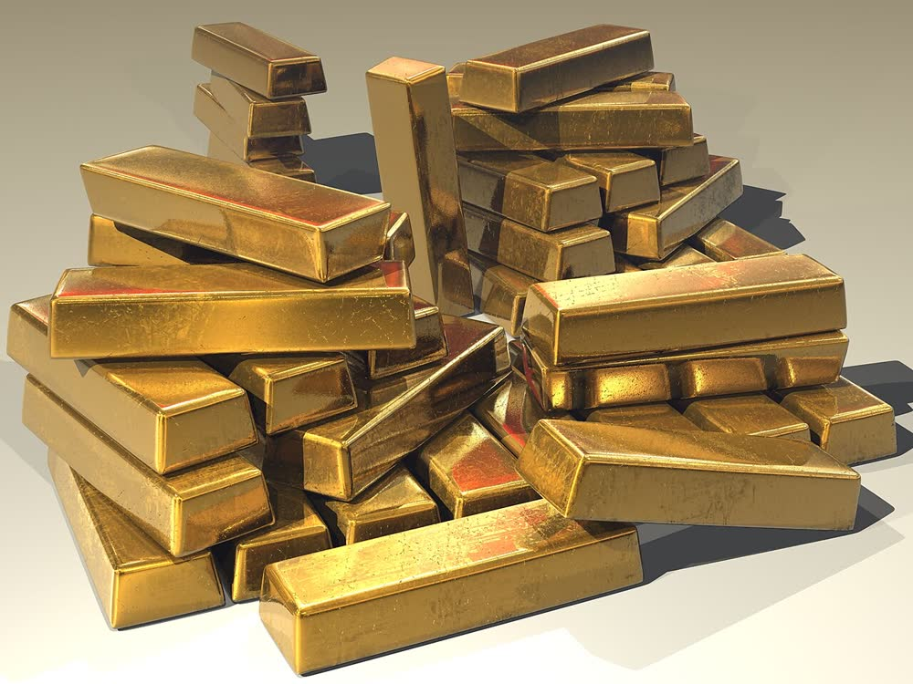

금의 역사 — 사람들은 왜 금을 믿을까The History of Gold — Why Do People Trust Gold?
- 금은 녹슬지 않고, 양이 한정되어 있고, 누구나 알아보기 때문에 오래도록 가치 저장 수단이었습니다.Gold does not rust, is limited and is recognized by everyone, so it has long been a store of value.
- 1971년 이후 금값은 시장에서 정해지며 금리, 달러, 불안감에 따라 크게 오르내립니다.Since 1971 its price has been set by the market and swings with interest rates, the dollar and fear.
- 금은 이자를 주지 않아서 금리가 높을 때는 인기가 떨어지는 경향이 있습니다.Gold pays no interest, so it tends to lose popularity when rates are high.
2026년 들어 금값이 크게 오르내리면서 "금을 사야 하나요?"라는 질문을 많이 듣습니다. 그 답을 찾으려면 먼저 사람들이 왜 수천 년 동안 금을 믿어 왔는지부터 알아야 합니다.
As gold prices swung widely in 2026, I often hear, "Should I buy gold?" To answer, we first need to know why people have trusted gold for thousands of years.1. 금이 특별한 이유
1. Why gold is special- 녹슬지 않음: 수천 년 된 금 장신구가 지금도 반짝입니다.It does not rust: gold jewelry thousands of years old still shines.
- 양이 한정됨: 마음대로 찍어낼 수 없습니다. 지금까지 캔 금을 모두 모아도 큰 건물 몇 채 크기라는 비유가 있습니다.It is limited: no one can print it. All the gold ever mined would fit in a few large buildings, as the saying goes.
- 나누고 녹이기 쉬움: 작은 조각도 같은 값어치를 지닙니다.It is easy to divide and melt: small pieces keep the same value per gram.
- 누구나 알아봄: 나라와 언어가 달라도 금은 금입니다.Everyone recognizes it: gold is gold in any country or language.

2. 고대의 금 — 신과 왕의 금속
2. Ancient gold — the metal of gods and kings고대 이집트에서는 금을 신의 살로 여겨 파라오의 무덤을 금으로 꾸몄습니다. 기원전 6세기 리디아의 크로이소스 왕 때 순금 동전이 널리 쓰였다고 알려져 있습니다. 신라의 금관처럼 우리 역사에서도 금은 권력과 신성함의 상징이었습니다.In ancient Egypt, gold was seen as the flesh of the gods and filled the pharaohs' tombs. Pure gold coins are said to have spread under King Croesus of Lydia in the 6th century BC. In Korea too, like the Silla gold crowns, gold symbolized power and holiness.
3. 금본위제와 1717년 뉴턴
3. The gold standard and Newton in 1717만유인력으로 유명한 아이작 뉴턴은 영국 조폐국 책임자로도 일했습니다. 1717년 그가 정한 금과 은의 교환 비율이 영국을 사실상 금 중심의 화폐 제도로 이끌었다는 평가가 있습니다. 19세기에는 여러 나라가 금본위제를 택했고, 돈의 가치는 금에 묶였습니다.Isaac Newton, famous for gravity, also ran Britain's Royal Mint. The gold-silver ratio he set in 1717 is said to have moved Britain toward a gold-based system. In the 19th century many countries adopted the gold standard, tying money to gold.
4. 1933년 미국의 금 보유 금지
4. The 1933 US ban on holding gold대공황 중이던 1933년 루스벨트 대통령은 행정명령 6102호로 개인이 금화와 금괴를 많이 갖지 못하게 하고 정부에 팔도록 했습니다. 이듬해 금값을 1온스 20.67달러에서 35달러로 올렸습니다. 달러의 가치를 낮춰 돈을 더 풀기 위한 조치였습니다. 이 금지는 1974년에야 풀렸습니다.In 1933, during the Great Depression, President Roosevelt's Executive Order 6102 required people to sell most gold coins and bars to the government. The next year the gold price was raised from $20.67 to $35 per ounce, lowering the dollar's value to allow more money. The ban was lifted only in 1974.
5. 1971년 이후 — 시장이 정하는 금값
5. After 1971 — a market price for gold닉슨 쇼크로 달러와 금의 고정 교환이 끝나자 금값은 시장에서 정해지게 되었습니다. 1970년대 높은 물가와 오일쇼크 속에 금값은 1980년 1월 1온스 850달러 안팎까지 치솟았다가 이후 20년 가까이 내려갔습니다. 1999~2001년에는 300달러 아래였고, 2011년 1,900달러 근처, 2020년 2,000달러를 넘었습니다. 2026년에는 1월에 5,500달러를 넘는 최고가를 찍은 뒤 11월 3,600달러대로 크게 내려왔습니다(월봉 기준, 공개 시세 참고).After the Nixon shock, the gold price was set by the market. Amid high inflation and oil shocks, it soared to around $850 per ounce in January 1980, then fell for nearly 20 years. It was below $300 in 1999–2001, near $1,900 in 2011 and above $2,000 in 2020. In 2026 it hit a record above $5,500 in January, then fell to the $3,600s in November (monthly data from public quotes).
6. 1998년 금 모으기 운동
6. Korea's 1998 gold-collecting campaign1997년 외환위기로 나라에 달러가 바닥나자, 1998년 초 많은 국민이 장롱 속 돌반지와 결혼반지를 내놓았습니다. 약 350만 명이 참여해 200톤이 넘는 금이 모였다고 알려져 있습니다. 금이 나라의 위기 때 달러를 마련하는 '마지막 저금통' 역할을 한 감동적인 장면이었습니다.When Korea ran out of dollars in the 1997 crisis, many people gave their baby rings and wedding rings in early 1998. About 3.5 million people joined, and over 200 tons of gold were collected. Gold served as the nation's "last piggy bank" to raise dollars.
7. 금값은 왜 움직일까
7. What moves the gold price?| 원인Factor | 금값에 주는 영향 (보통)Usual effect on gold |
|---|---|
| 실질 금리 상승Real interest rates rise | 내림 — 이자 없는 금이 불리Down — gold pays no interest |
| 달러 강세Stronger dollar | 내림 — 다른 나라 사람에게 금이 비싸짐Down — gold costs more for others |
| 전쟁·위기·불안War, crisis, fear | 오름 — 안전자산 수요Up — demand for safe assets |
| 중앙은행의 금 매입Central banks buy gold | 오름Up |
| 물가 상승 기대Expected inflation | 오름 — 돈 가치 하락 대비Up — hedge against weaker money |
2026년 가을에는 미국 금리가 높게 유지되고 달러가 강해지면서 금값이 크게 내려왔습니다. 위 표처럼 여러 힘이 동시에 작용하기 때문에, "위기니까 금이 오른다"처럼 하나만 보고 판단하면 틀리기 쉽습니다.In autumn 2026, high US rates and a strong dollar pushed gold down sharply. Because several forces act at once, judging by one factor, like "a crisis means gold goes up," is easy to get wrong.
8. 조율사의 생각
8. A tuner's thought금은 소리굽쇠 같습니다. 유행이 바뀌어도 늘 같은 기준을 떠올리게 해 줍니다. 하지만 소리굽쇠만 들고 연주회를 할 수는 없듯, 금만으로 재산을 불리기는 어렵습니다. 금은 전체 재산의 일부를 지키는 보험으로 생각하는 사람이 많습니다.Gold is like a tuning fork: it reminds us of a steady standard when fashions change. But you cannot give a concert with only a tuning fork, and it is hard to grow wealth with gold alone. Many see gold as insurance for part of their assets.
📘 오늘의 영어 단어
📘 Today's English words| 영어 | 발음 | 뜻 |
|---|---|---|
| gold | 골드 | 금 |
| ounce | 온스 | 온스(약 31.1g) |
| bullion | 불리언 | 금괴 |
| safe haven | 세이프 헤이븐 | 안전자산 |
| store of value | 스토어 오브 밸류 | 가치 저장 수단 |
| real interest rate | 리얼 인터레스트 레이트 | 실질금리 |
| hedge | 헤지 | 위험 회피 |
| record high | 레코드 하이 | 사상 최고치 |
| demand | 디맨드 | 수요 |
| supply | 서플라이 | 공급 |
쉬운 예문
- Gold is often called a safe haven.
금은 흔히 안전자산이라고 불립니다. - Gold does not pay interest.
금은 이자를 주지 않습니다. - The price of gold fell as the dollar got stronger.
달러가 강해지면서 금값이 내렸습니다.
🔊 버튼을 누르면 브라우저에 들어 있는 음성으로 영어를 읽어 줍니다(기기에 따라 안 될 수 있어요).
자주 묻는 질문
Frequently asked questions금은 언제 사는 게 좋나요?When is a good time to buy gold?
교과서적으로는 실질 금리가 꼭대기를 지나 내려가기 시작할 때, 달러가 약해질 때가 유리하다고 합니다. 다만 정확한 때를 맞히기는 어려워 나눠 사는 방법을 많이 씁니다. 투자 권유는 아닙니다.Textbooks say it helps when real rates peak and start falling, or when the dollar weakens. Timing is hard, so many people buy in parts. This is not investment advice.
금과 주식은 반대로 움직이나요?Do gold and stocks move opposite?
위기 때 주식이 떨어지고 금이 오르는 일이 많지만, 금리가 크게 오르는 시기에는 둘이 함께 떨어지기도 합니다. 2026년 10~11월이 그런 예입니다.Often stocks fall and gold rises in a crisis, but when rates rise sharply they can fall together, as in October–November 2026.
금 투자 방법에는 무엇이 있나요?How can I invest in gold?
금괴·골드바 실물, 은행 금 통장, 한국거래소 금 시장, 금 ETF 등이 있습니다. 세금과 수수료가 다르니 비교해 보세요.Physical gold bars, bank gold accounts, the KRX gold market and gold ETFs. Taxes and fees differ, so compare them.
※ 이 글은 투자 권유가 아닌 공부 자료입니다.※ This page is study material, not investment advice. 숫자와 연도는 널리 알려진 역사 자료를 바탕으로 쉽게 정리했으며, 실제 투자 판단은 본인 책임입니다. 사진 출처: Gold bullion bars.jpg (CC0 (Stevebidmead)). 그림과 움직이는 그림은 직접 만들었습니다. · 📞 010-8756-8740